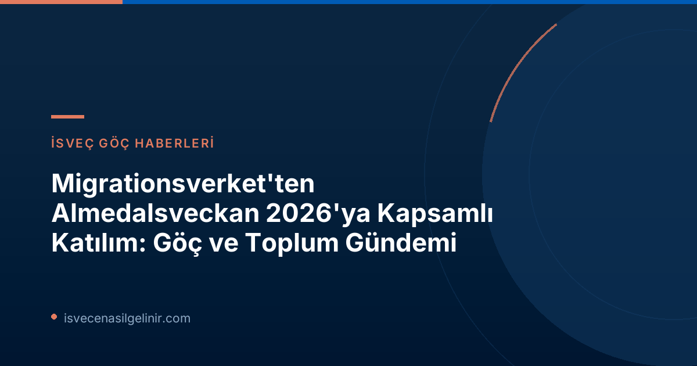

Migrationsverket'in Almedalsveckan 2026'daki Rolü ve Odak Alanları
Migrationsverket, Almedalsveckan boyunca Visby'de toplam 14 program noktasına katılım sağlayacak. Kurumun iki ayrı seminer düzenlemesinin yanı sıra, birçok dış programda yer alacak ve göç ile toplumsal gelişime yönelik güncel konular üzerine merkezi işbirliği aktörleriyle görüşmeler gerçekleştirecek. Bu yılki etkinliklerde özel bir odak noktası, Avrupa Birliği'nin Göç ve İltica Paktı'nın uygulanması olacak. Ayrıca, aşağıdaki önemli konular da Migrationsverket'in gündeminde yer alacak:- Makro düzeyde kurumların hazırlıklı olma durumu ve kriz yönetimi
- İş hayatında karşılaşılan suç ve usulsüzlüklerle mücadele
- Yapay zeka (AI) teknolojilerinin göç süreçlerine entegrasyonu ve etkileri
- LGBTQI+ bireylerin göç ve iltica süreçlerindeki hakları ve karşılaştıkları zorluklar
Migrationsverket'in Düzenlediği ve Katıldığı Seminerler
Migrationsverket, hem kendi düzenlediği seminerlerle hem de çeşitli paydaşların etkinliklerindeki katılımlarıyla Almedalsveckan 2026'ya zengin bir içerik sunuyor. Aşağıda, kurumun katılım sağladığı önemli program noktalarını bulabilirsiniz:AB Göç ve İltica Paktı: İsveç'e Etkileri
Avrupa Birliği'nin yeni Göç ve İltica Paktı, İsveç'in mülteci kabul sistemini nasıl etkileyecek? Bu kapsamlı tartışmada, paktın getirdiği yenilikler ve İsveç'teki uygulamalar detaylı bir şekilde ele alınacak. Bu tür yasal düzenlemeler, İsveç'e yerleşme ve vatandaşlık süreçleri için önemli bilgiler içerir. Konuyla ilgili güncel bilgiler ve olası İsveç Vatandaşlık Sınavı hazırlıkları Migrationsverket tarafından açıklanacaktır.
Salı Programı
Migrationsverket'in Salı günü iştirak ettiği ve düzenlediği etkinlikler:| Saat | Konu | Düzenleyen | Yer | Katılımcılar |
|---|---|---|---|---|
| 13.30–14.30 | AB Göç ve İltica Paktı İsveç'in mülteci kabulünü nasıl etkiliyor? | Migrationsverket | S:t Hansgatan 21, Almedalsarenan | Veronika Lindstrand Kant, Johanna Ó Duinnín, Karin Ödquist Drackner, Maria Mindhammar, Jesper Tengroth |
| 15.00–16.00 | Farklı toplumsal aktörler gönüllü geri dönüş için nasıl birlikte çalışabilir? | Migrationsverket ve Gönüllü Geri Dönüş Ulusal Koordinatörü | S:t Hansgatan 21, Almedalsarenan | Teresa Zetterblad, Petra Lindh, Bilal Almobarak, Åsa Simonsson, Katarina Gentzel Sandberg |
| 14.00–14.30 | Zorunlu ama esnek – AB'nin dayanışma modeli İsveç'i nasıl etkiliyor? | Göç Çalışmaları Delegasyonu (Delmi) | Hamnplan, mekan 221 | Jenny Bergsten, Bernd Parusel, Charlotte Marie |
| 17.00–18.00 | Acil durumlarda liderlik – Devlet işverenleri artırılmış hazırlığa hazır mı? | İşveren Kurumu (Arbetsgivarverket) | Korsgatan 4, İl Yönetim Kurulu Bahçesi | Charlotte Petri Gornitzka, Maria Mindhammar, Johan Kuylenstierna, Susanne Thedéen, Robert Egnell, Jens Mattsson, Ann Lindberg, Johan Norrman, Ann Follin |
Çarşamba Programı
Çarşamba günü Migrationsverket temsilcilerinin katıldığı tartışmalar:| Saat | Konu | Düzenleyen | Yer | Katılımcılar |
|---|---|---|---|---|
| 10.45–11.45 | İnisiyatiften hızlandırılmış yeteneğe – kamu sektörü sürdürülebilir bir AI stratejisini nasıl inşa eder? | CGI | Birgers gränd 7, Almedalen girişli bahçe | Cecilia Elb, Christian Dahlgren, Ingrid Halvorsen, Johan Magnusson, Stefan Andersson |
| 09.00–10.15 | İş hayatı suçları İsveç'in en hafife alınan sorunu mu – İsveç işgücü piyasasını kim yönetiyor? | Södertörn Üniversitesi ve Organize Suçla Mücadele İsveç (SMOB) | Skeppsbron 24, Joda Bar och kök | Maria Mindhammar, Jonas Andé, Birgitta Pettersson, Tomas Andersson, Carina Lindfelt, Mattias Schulstad, Lars Lööw |
Perşembe Programı
Migrationsverket'in Perşembe günü katılım gösterdiği son program:| Saat | Konu | Düzenleyen | Yer | Katılımcılar |
|---|---|---|---|---|
| 11.15–11.45 | Cinsel yönelim, cinsiyet kimliği ve cinsiyet ifadesini sığınma nedeni olarak belirten kişilerin sığınma incelemesi | Göç Çalışmaları Delegasyonu (Delmi) | Hamnplan, mekan 221 | Anna Hammarstedt, Lovise Brade, Anna Lindblad |
Toplumsal Diyalog ve Şeffaflık
Migrationsverket'in Almedalsveckan'daki aktif katılımı, şeffaflık ve toplumsal diyalog konusundaki taahhüdünü göstermektedir. Göç gibi hassas ve sürekli değişen bir alanda, farklı paydaşlarla bir araya gelmek, bilgi paylaşımını sağlamak ve kamuoyunu aydınlatmak büyük önem taşımaktadır. Bu platformlar, hem politika yapıcıların hem de vatandaşların göç süreçlerini daha iyi anlamalarına yardımcı olur.Sonuç ve Gelecek Perspektifi
Almedalsveckan 2026, Migrationsverket için AB Göç ve İltica Paktı'nın yanı sıra, işgücü piyasası suçları, yapay zeka ve LGBTQI+ hakları gibi kritik konularda farkındalık yaratma ve çözümler üretme fırsatı sunmuştur. Bu tür etkinlikler, İsveç'in göç politikalarını şekillendiren temel dinamikleri anlamak ve gelecekteki gelişmeleri öngörmek açısından paha biçilmezdir.Referanslar
- Migrationsverket - Migrationsverkets medverkan under Almedalsveckan 2026
İsveç'e Göç ve Vatandaşlık Süreçleri Hakkında Merak Ettikleriniz Mi Var?
İsveç'te yasal süreçler, oturum izinleri ve vatandaşlık başvuruları hakkında kapsamlı bilgilere ulaşmak için sitemizdeki rehberleri inceleyin veya uzmanlarımızla iletişime geçin.